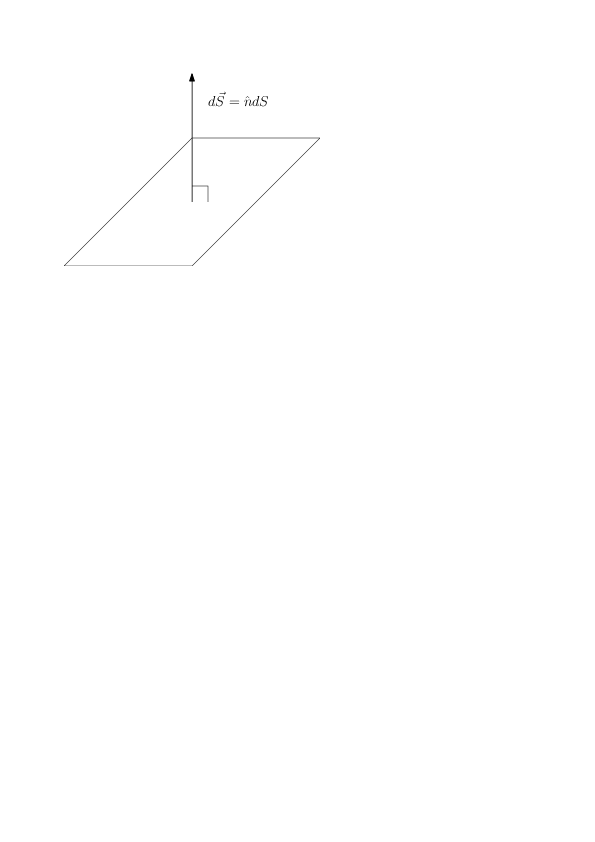
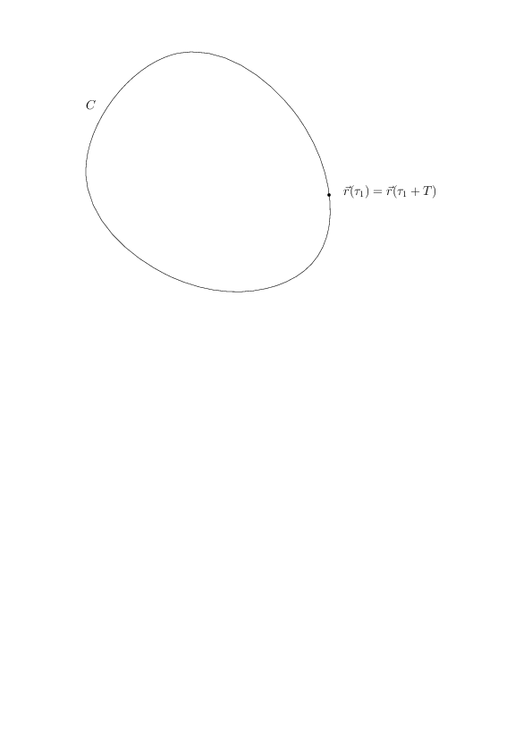

T.ex. ges en kurva \( C \) av \( \vec{r}(\tau) \) med \( \tau \in [\tau_1,\tau_2] \). Då blir $$ \begin{equation} \int_C \vec{F}\cdot \mbox{d}\vec{r} = \int_{\tau_1}^{\tau_2} \vec{F} \cdot \frac{\mbox{d}\vec{r}}{\mbox{d}\tau} \mbox{d}\tau, \tag{1} \end{equation} $$ och efter att ha beräknat skalärprodukten har vi en helt vanlig endimensionell integral.
Lägg här märke till att \( d\vec{r}/d\tau \) är en tangentvektor till kurvan \( C \). I princip finns det oändligt många parametriseringar till kurvan \( C \), och rent matematiskt spelar det ingen roll vilken man väljer, fast vissa parametriseringar ger snällare räkningar än andra!
Ibland är kurvan \( C \) sluten, det vill säga kurvans start- och slutpunkt sammanfaller.

Man skriver då integralen som $$ \begin{equation} \oint_C \vec{F} \cdot \mbox{d}\vec{r}. \tag{2} \end{equation} $$
Det finns andra typer av linjeintegraler, till exempel $$ \begin{equation} \int \phi \mbox{d}\vec{r}, \quad \int \phi \mbox{d}s \tag{3} \end{equation} $$ där \( \phi \) är ett skalärt fält och \( \mbox{d}s = | \mbox{d}\vec{r} | \). Samt $$ \begin{equation} \int \vec{F} \times \mbox{d}\vec{r}, \quad \int \vec{F} \mbox{d}s. \tag{4} \end{equation} $$
Betrakta två kurvor \( C_1 \) och \( C_2 \) mellan A och B. Då kan vi skapa en sluten kurva \( C_0 \) genom att först följa kurvan \( C_1 \) från A till B, och sedan kurvan \( C_2 \) baklänges, det vill säga i negativ riktning, tillbaka till A. Integralen över \( C_0 \) måste då vara 0, fast den integralen kan vi också skriva som $$ \begin{equation} \oint_{C_0} \vec{F} \cdot\mbox{d}\vec{r} = \int_{C_1} \vec{F} \cdot\mbox{d}\vec{r} - \int_{C_2} \vec{F} \cdot\mbox{d}\vec{r} = 0, \tag{7} \end{equation} $$ ty integralen byter tecken om vi följer kurvan i fel riktning. Nu följer det att $$ \begin{equation} \int_{C_1} \vec{F} \cdot\mbox{d}\vec{r} = \int_{C_2} \vec{F} \cdot\mbox{d} \vec{r}. \tag{8} \end{equation} $$
Betrakta kurvintegralen \( \int_C \vec{A} \cdot d\vec{r} \) där \( \vec{A} = -\vnabla \phi \), dvs en fältstyrka.
Precis som man kan beräkna linjeintegralerna genom att parametrisera linjen längs vilken man integrerar kan man beräkna ytintegralerna genom att parametrisera ytan längs med vilken man integrerar. Skillnaden är att genom att ytan är två-dimensionell så behöver man två parametrar. Antag att ortsvektorerna för punkterna på ytan kan skrivas som \( \vec{r}(v,w) \) där \( v \) och \( w \) är våra parametrar. Vi kan då bilda två tangentvektorer till ytan $$ \begin{equation} \frac{\partial \vec{r}}{\partial v} \quad \mathrm{och} \quad \frac{\partial \vec{r}}{\partial w}. \tag{9} \end{equation} $$ Förutsatt att dessa tangentvektorer inte är parallella, annars måste vi finna en ny parametrisering, kan vi bilda en normalvektor till ytan $$ \begin{equation} \frac{\partial \vec{r}}{\partial v} \times \frac{\partial \vec{r}}{\partial w}. \tag{10} \end{equation} $$

Analogt med hur vi tidigare uttryckte linjeintegralen med hjälp av vår parameter kan vi nu skriva ytintegralen som $$ \begin{equation} \int_S \vec{F} \cdot \mbox{d}\vec{S} = \int_S \vec{F} \cdot \frac{\partial \vec{r}}{\partial v} \times \frac{\partial \vec{r}}{\partial w} \mbox{d}v \mbox{d}w, \tag{11} \end{equation} $$ där \( \mbox{d}\vec{S} = \hat{n} \mbox{d}S = \frac{\partial \vec{r}}{\partial v} \times \frac{\partial \vec{r}}{\partial w} \mbox{d}v \mbox{d}w \) är ytan på det parallellogram som spänns upp av de två tangentvektorerna. Normalvektorn uppfyller \( |\hat{n}|=1 \).
Jämför gärna denna parametrisering med våra tidigare uttryck för ytelement i kroklinjiga koordinater. Kan vi välja ett koordinatsystem så att det sökta ytelementet ligger på \( u_1 \)-ytan så blir \( d\vec{S} = d\vec{S}_1 = \hat{e}_1 h_2 h_3 du_2 du_3 \), vilket man t.ex. ser från \( d\vec{S}_1 = \frac{\partial \vec{r}}{\partial u_2} \times \frac{\partial \vec{r}}{\partial u_3} du_2 du_3 = \hat{e}_1 h_2 h_3 du_2 du_3 \)
Allmänt skriver man ytintegraler över en yta \( S \) (ofta använder man i de här sammanhangen \( S \) för att beteckna en yta) som $$ \begin{equation} \int_S \vec{F} \cdot \mbox{d}\vec{S}. \tag{12} \end{equation} $$ För att skilja dessa integraler från andra ytintegraler, som emellanåt förekommer, kallar man dem för normalytintegraler.
För resten av den här kursen kommer det ofta att vara lämpligt att på detta sätt beskriva arean av ett ytelement som en vektor. En komplikation är förstås att en yta i allmänhet har två motsatta normalvektorer, och man måste därför ange vilken riktning som är positiv. Ytterligare en komplikation är att det finns ytor för vilka man inte kan definiera normalvektorn på ett kontinuerligt sätt över hela ytan, till exempel Möbius-bandet. Vi skall inte befatta oss med sådana ytor här, utan begränsa oss till orienterbara ytor, ytor som har en insida och en utsida.
Om ytan \( S \) är sluten så skriver man $$ \begin{equation} \oint_S \vec{F} \cdot \mbox{d}\vec{S}. \tag{13} \end{equation} $$ För slutna ytor definierar man den positiva riktningen som den som ges av en vektor som pekar ut från den inneslutna volymen.
Det finns också andra former av ytintegraler, vilka emellanåt används: $$ \begin{equation} \int_S \phi dS, \tag{14} \end{equation} $$ där \( \phi \) är en skalär, och vi i detta fall inte betraktar \( S \) som en vektor. $$ \begin{equation} \int_S \phi d\vec{S} \tag{15} \end{equation} $$ Skillnaden mot det första fallet är att \( S \) här behandlas som en vektor. $$ \begin{equation} \int_S \vec{v} \times d\vec{S} \tag{16} \end{equation} $$ där \( \vec{v} \) är en vektorvärd funktion.
Det finns bara två möjliga sätt att volymintegrera ett fält. Med (det skalära) volymelementet \( \mbox{d}V \) $$ \begin{equation} \int_V \phi \mbox{d}V,\quad \int_V \vec{F} \mbox{d}V. \tag{17} \end{equation} $$ En parametrisering med \( (u,v,w) \) ger att volymselementet blir volymen av parallellepipeden med sidorna \( \frac{\partial \vec{r}}{\partial u} \mbox{d}u \), \( \frac{\partial \vec{r}}{\partial v} \mbox{d}v \), \( \frac{\partial \vec{r}}{\partial w} \mbox{d}w \) (som då måste vara linjärt oberoende). Denna volym är $$ \begin{equation} \mbox{d}V = \left| \frac{\partial \vec{r}}{\partial u} \cdot \left( \frac{\partial \vec{r}}{\partial v} \times \frac{\partial \vec{r}}{\partial w} \right) \right| \mbox{d}u \mbox{d}v \mbox{d}w. \tag{18} \end{equation} $$
Från tidigare kapitel har vi $$ \begin{equation} d\vec{r} = \hat{e}_1 h_1 du_1 + \hat{e}_2 h_2 du_2 + \hat{e}_3 h_3 du_3 \tag{19} \end{equation} $$
Vidare ytelementet, t.ex. för en \( u_1 \)-yta (dvs i \( u_2 u_3 \)-planet): $$ \begin{align} \mbox{d} S_1 &= h_2 h_3 \mbox{d}u_2 \mbox{d}u_3 \tag{20}\\ \mbox{d} \vec{S}_1 &= \pm \hat{e}_1 h_2 h_3 \mbox{d}u_2 \mbox{d}u_3 \tag{21} \end{align} $$ vilket man t.ex. ser från $$ \begin{equation} \mbox{d} \vec{S}_1 = \frac{d\vec{r}}{du_2} \times \frac{d\vec{r}}{du_3} du_2 du_3 = \hat{e}_1 h_2 h_3 \mbox{d}u_2 \mbox{d}u_3 \tag{22} \end{equation} $$
Volymelement: $$ \begin{equation} \mbox{d} V = h_1 h_2 h_3 \mbox{d}u_1 \mbox{d}u_2 \mbox{d}u_3. \tag{23} \end{equation} $$
Med ett vektorfält \( \vec{F} \) som tecknas i det kroklinjiga koordinatsystemet \( \vec{F} = F_1 \hat{e}_1 + F_2 \hat{e}_2 + F_3 \hat{e}_3 \) får vi t.ex. $$ \begin{align} \int_{C_1} \vec{F} \cdot d\vec{r} &= \int_{C_1} F_1 h_1 du_1 \tag{24}\\ \int_{S_1} \vec{F} \cdot d\vec{S}_1 &= \int_{S_1} F_1 h_2 h_3 du_2 du_3 \tag{25}\\ \int_V \vec{F} dV &= \int_V \vec{F} h_1 h_2 h_3 du_a du_2 du_3, \tag{26} \end{align} $$ där \( C_1 \) är en kurva längs \( u_1 \)-riktningen och \( S_1 \) är en \( u_1 \)-yta.
Beräkna integralen \( \oint_C \phi d\vec{r} \) där \( \phi = \phi_0 \) (konstant) och kurvan \( C \) beskriver en cirkel i xy-planet med radie \( a \) och centrum i origo som genomlöps medurs.
Beräkna integralen \( \oint_C \phi dr \) där \( \phi = \phi_0 \) (konstant) och kurvan \( C \) beskriver en cirkel i xy-planet med radie \( a \) och centrum i origo som genomlöps medurs.
En partikel rör sig längs en bana C, som ges av \( \vec{r}(t) \), under inverkan av en kraft \( \vec{F}(\vec{r}) \). Vi vill då beräkna arbetet som kraften utövar på partikeln. Mellan punkterna \( \vec{r} \) och \( \vec{r}+\mbox{d}\vec{r} \) så är arbetet $$ \begin{equation} \mbox{d}W = \vec{F}\cdot \mbox{d}\vec{r}. \tag{29} \end{equation} $$ Vi kan då beräkna arbetet längs hela kurvan genom att beräkna integralen $$ \begin{equation} W = \int_C \vec{F}\cdot \mbox{d}\vec{r}. \tag{30} \end{equation} $$ Denna integral är ett exempel på en linjeintegral (kurvintegral). Vi kan skriva $$ \begin{equation} W = \int_C \vec{F} \cdot \frac{\mbox{d}\vec{r}}{\mbox{d}t} \mbox{d}t = \int P \mbox{d}t, \tag{31} \end{equation} $$ där \( P \) är effekten.
En elektron rör sig längs banan \( y = \frac{x^2}{H} \) från \( (0,0) \) till \( (L,L^2/H) \) under inverkan av en elektrostatisk kraft \( \vec{F} = e E_0\hat{y} \). Beräkna det arbete som kraften utför på elektronen.
Beräkna integralen av \( \vec{u} = (xy/a^2, z^2/a^2, x/a) \) längs med kurvan $$ \begin{equation} \left\{\begin{array}{lcl} x & = & (1+t) a\\ y & = & 0\\ z & = & t^2 a\\ \end{array}\right. \tag{38} \end{equation} $$ där \( 0 \le t \le 3 \).
Vi beräknar då först $$ \begin{equation} \frac{\mbox{d}\vec{r}}{\mbox{d}t} = a (1, 0, 2t). \tag{39} \end{equation} $$ Vektorfältet uttryckt i \( t \) är $$ \begin{equation} \vec{u} = \left(\left(1+t\right) \cdot 0, t^4, 1+t\right) = \left(0,t^4,1+t\right). \tag{40} \end{equation} $$ Skalärprodukten mellan vektorerna är $$ \begin{equation} \left(0,t^4,1+t\right) \cdot a \left(1,0,2t\right) = a(2t + 2t^2). \tag{41} \end{equation} $$ Integralen blir $$ \begin{equation} a \int_0^3 \left(2t+2t^2\right)\mbox{d}t = a \left[t^2 + \frac{2t^3}{3}\right]_0^3 = a(9 + 18) = 27a. \tag{42} \end{equation} $$
En vätska med densiteten \( \rho \) och hastigheten \( \vec{u} \) strömmar parallellt genom ett rör med tvärsnittsarean \( A \). Flödet av vätska genom röret (det vill säga kg vätska som per sekund strömmar genom röret är då \( \rho u A \).
Vad händer då om vätskans hastighet \( \vec{u} \) beror på avståndet \( r \) från rörets symmetriaxel? I så fall får vi definiera en flödestäthet \( \rho u(r) \) så att flödet genom ett ytelement \( dS \) blir \( \rho u(r)dS \). Om vi tar \( dS \) som en ring med centrum i symmetriaxeln och med en tjocklek d$r$ så är d$A = 2\pi r$d$r$ och det totala flödet genom röret blir $$ \begin{equation} \int \rho u( r ) dS = \int_0^R \rho u ( r ) 2 \pi r dr, \tag{43} \end{equation} $$ där \( R \) är rörets radie.
För att nu ytterligare komplicera det hela och verkligen blanda in vektorerna så antar vi att vätskan strömmar genom en tvärsnittsarea \( dS \), vilken inte är vinkelrät mot vätskans strömningshastighet \( \vec{u} \). Vi antar att vinkeln mellan normalvektorn \( \vec{n} \) till ytan \( dS \) och vätskans hastighet \( \vec{u} \) är \( \theta \). Då blir flödet genom ytan \( dS \) $$ \begin{equation} \rho u dS \cos \theta. \tag{44} \end{equation} $$ Om vi nu väljer att definiera en vektor \( d\vec{S} \) för ett ytelement med storleken \( dS \) och riktningen \( \vec{n} \), så ser vi att vi kan skriva flödet som $$ \begin{equation} \rho \vec{u} \cdot d\vec{S}, \tag{45} \end{equation} $$ där \( \rho \vec{u} \) kan kallas för en massflödestäthet (jämför med en strömtäthet för flöde av elektrisk laddning).
Vi kan nu skriva vätskeflödet genom en godtycklig yta \( A \) som $$ \begin{equation} \int_A \rho \vec{u} \cdot d\vec{S}, \tag{46} \end{equation} $$ vilket är ett typiskt exempel på en ytintegral.
Beräkna ytintegralen av fältet \( \vec{u} = (x,z,-y) \) över cylinderytan \( x^2 + y^2 = 1 \) mellan \( z = 0 \) och \( z = 1 \) med normalen pekandes bort från \( z \)-axeln. Vi kan då beskriva punkterna på ytan genom deras \( z \)-koordinat och vinkeln \( \varphi \) som ortsvektorn bildar med \( \hat{x} \)-vektorn. Det vill säga \( \vec{r} = (\cos\varphi , \sin\varphi , z) \), och tangentvektorerna blir $$ \begin{equation} \frac{\partial \vec{r}}{\partial \varphi} = \left(-\sin\varphi , \cos \varphi , 0\right) \tag{47} \end{equation} $$ och $$ \begin{equation} \frac{\partial \vec{r}}{\partial z} = \left(0,0,1\right). \tag{48} \end{equation} $$ Ytelementet blir $$ \begin{equation} \mbox{d} \vec{S} = \frac{\partial \vec{r}}{\partial \varphi} \times \frac{\partial \vec{r}}{\partial z} \mbox{d}\varphi \mbox{d}z = \left(\cos\varphi , \sin \varphi, 0\right) \mbox{d}\varphi \mbox{d}z. \tag{49} \end{equation} $$ Vi kan sedan beräkna integralen som $$ \begin{align} \int_S \vec{u} \cdot \mbox{d}\vec{S} &= \int_0^1\int_0^{2\pi} \left(\cos\varphi, z, -\sin\varphi\right) \cdot \left(\cos\varphi, \sin \varphi, 0\right) \mbox{d}\varphi \mbox{d}z \nonumber \\ &= \int_0^1\int_0^{2\pi} \left(\cos^2\varphi + z \sin\varphi\right) \mbox{d}\varphi\mbox{d}z \nonumber \\ &= \int_0^1 \int_0^{2\pi} \left( \frac{1}{2} + \frac{1}{2}\cos 2\varphi + z\sin\varphi\right) \mbox{d}\varphi \mbox{d}z \nonumber \\ &= \int_0^1 \left[\frac{1}{2}\varphi + \frac{1}{4}\sin2\varphi - z \cos\varphi\right]_0^{2\pi} \mbox{d}z = \int_0^1 \pi \mbox{d}z = \pi. \tag{50} \end{align} $$